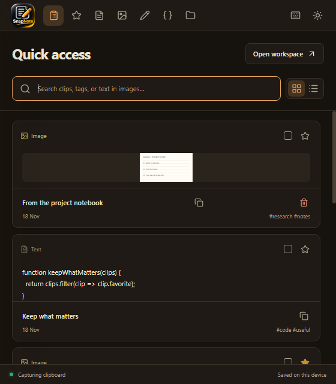

Smart Clipboard History
Every text snippet, URL, code block, and screenshot you copy is automatically captured, deduplicated, and indexed locally. Search across titles, body text, tags, and extracted image OCR text instantly with Ctrl+K.
SnapNote turns your Windows clipboard into a fast, private workspace for clips, notes, snippets, and screenshots. Press Alt + X from any app to find what you copied in a second — with zero accounts, zero cloud uploads, and zero telemetry.

Built for daily speed
Stop digging through old tabs, lost chat messages, and overwritten clipboards. SnapNote keeps text, links, images, and notes organized right on your machine.
Every text snippet, URL, code block, and screenshot you copy is automatically captured, deduplicated, and indexed locally. Search across titles, body text, tags, and extracted image OCR text instantly with Ctrl+K.
Tap Alt+X from any Windows app to pop up a compact, floating search palette. Copy what you need, tap again to hide — or pin the full frameless workspace above other windows whenever you're researching.
Write full notes with headings, bullet and numbered lists, interactive task checklists, blockquotes, syntax-friendly code blocks, undo/redo, and direct image paste.
Turn recurring emails, commands, or replies into reusable snippets using
{{variables}}. Copying prompts for each blank while keeping your
template intact.
Crop and annotate screenshots, pin reference images above other apps, and extract searchable text directly on your PC with optional Tesseract OCR.
Organize long-term projects in folders, group temporary research into sessions, and star favorites so clearing history never wipes out what matters.
Encrypt your entire local workspace at rest using AES-256-GCM and PBKDF2-SHA256. Lock in one click to halt clipboard capture and close pinned images instantly.
Export every clip, note, image, folder, and session to a portable JSON or password-encrypted backup file, and merge-import onto any machine cleanly.

Keyboard-first workflow
SnapNote launches into compact Quick Access so it never interrupts your screen. Search recent clips in milliseconds, expand into the full workspace when writing notes, and close the window anytime without losing your global hotkey.
Run the self-contained MSI or setup.exe — no Visual C++ runtime or account needed.
Quick Access floats above your editor, browser, or terminal. Tap Alt+X again to hide.
Enable history capture when you want it, pause before copying secrets, and lock anytime.
Real desktop interface
Real captures from the running Windows app. Built with a warm paper light mode, deep espresso dark mode, and a unified custom title bar.

Privacy by architecture
Passwords, API keys, private drafts, screenshots, and personal messages pass through your clipboard every day. SnapNote is built on a simple rule: there is no backend server, no login, and no telemetry SDK.
Data is stored locally in transactional IndexedDB inside your Windows profile. Turn on live encryption to lock everything with AES-256-GCM and PBKDF2-SHA256, or pause automatic capture in one click before copying sensitive items.
| Capability | SnapNote | Cloud apps |
|---|---|---|
| Account required | Never | Usually |
| Works 100% offline | Always | Limited |
| Telemetry & tracking | Zero | Common |
| AES-256 local encryption | Built in | Paid tier |
| Rich notes + OCR + snippets | All in one | Separate tools |
| Price | Free | Subscription |
Free Windows download
Self-contained 64-bit Windows installers built and validated automatically on GitHub Actions. Zero external runtime dependencies.
Get-FileHash .\SnapNote_*_x64_en-US.msi -Algorithm SHA256
Installers are unsigned indie builds, so Windows SmartScreen may ask for confirmation on first launch. Check the release notes and automated validation report anytime.
Answers
No. SnapNote statically links the C runtime in its Windows builds, so the MSI and setup.exe installers run on a clean Windows 10 or 11 machine out of the box. The only optional extra is Tesseract if you want offline OCR text extraction inside images.
Everything lives inside local transactional storage in the app's device profile on your PC. There is no cloud sync, no account, and zero telemetry. Backups are created only when you explicitly export them.
Yes. Closing the window minimizes SnapNote to the Windows system tray so Alt+X remains ready globally. Choosing Quit SnapNote from the tray menu exits the app completely.
Yes. Install Tesseract OCR once and add it to your Windows PATH. SnapNote runs recognition locally on your machine and stores extracted text as searchable metadata without uploading images anywhere.
You can enable optional live vault encryption in Settings. SnapNote encrypts stored clips, notes, and images using AES-256-GCM with PBKDF2-SHA256 key derivation. Your password is never stored or transmitted, so keep a secure copy and an encrypted backup.
SnapNote is an independent, free open-source project and its Windows installers are currently unsigned. Every release is built in a public GitHub Actions pipeline and ships with SHA-256 checksums so you can verify the exact file before installing.
Yes. On first launch, existing rich-text notes migrate cleanly into the workspace store while retaining a recovery copy of legacy records.
SnapNote is built with Tauri v2 and Rust, and prebuilt installers are currently tested and released for Windows 10 and Windows 11 (x64). Developers can inspect or build from source in the public GitHub repository.